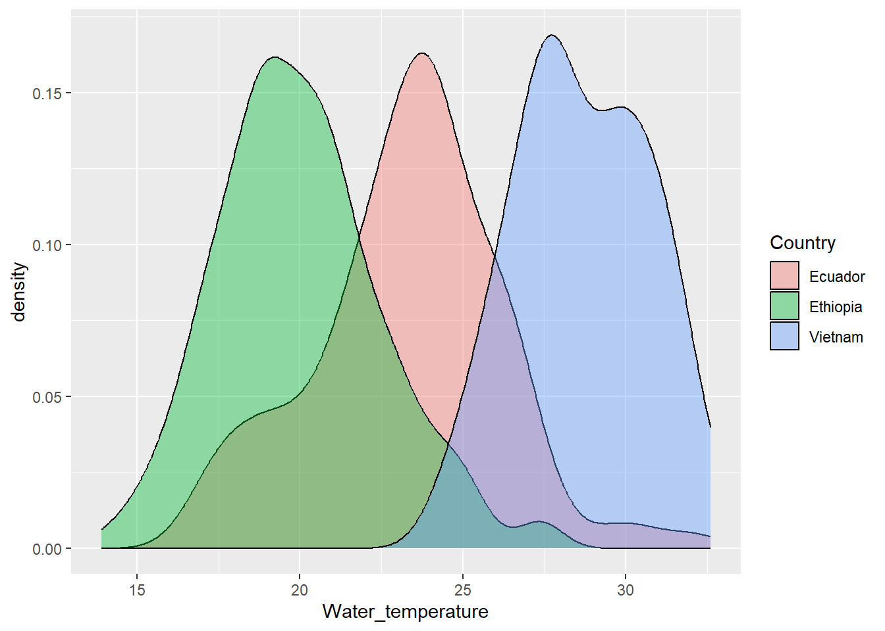
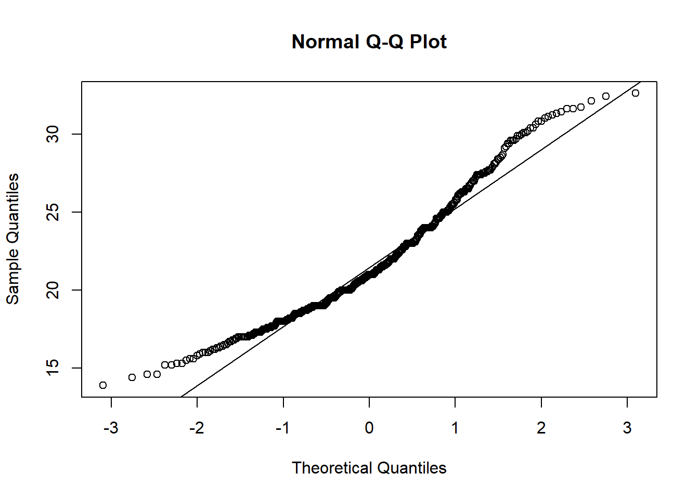
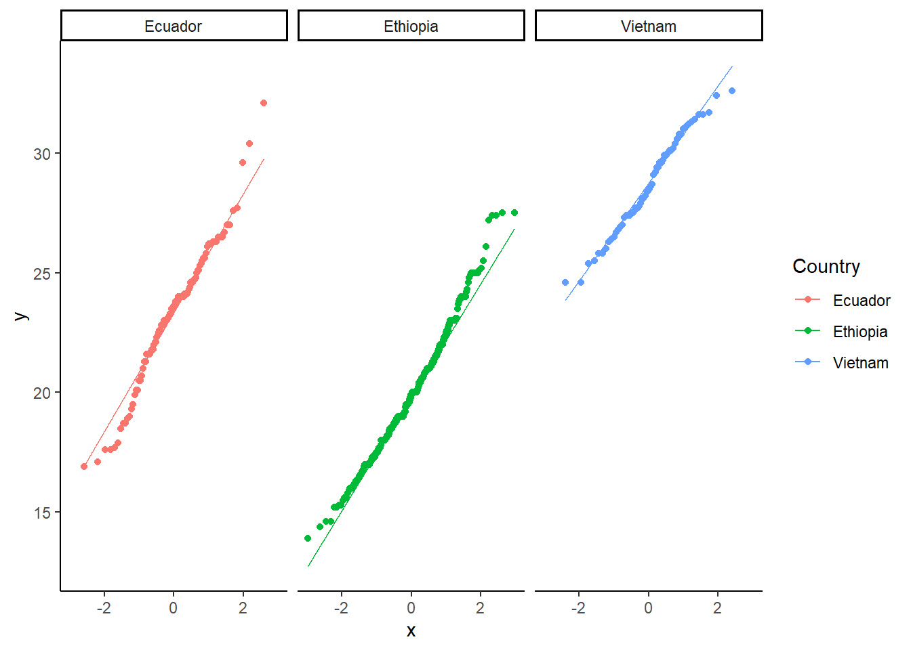
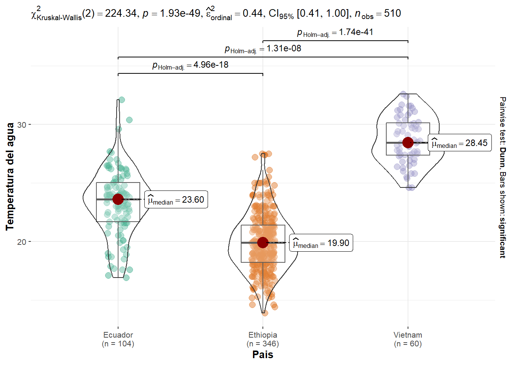

Código
#| label: setup
#| include: false
knitr::opts_chunk$set(
echo = TRUE,
warning = FALSE,
message = FALSE,
fig.width = 7,
fig.height = 5,
fig.align = "center"
)#| label: setup
#| include: false
knitr::opts_chunk$set(
echo = TRUE,
warning = FALSE,
message = FALSE,
fig.width = 7,
fig.height = 5,
fig.align = "center"
)Preferencias abioticas de macroinvertebrados acuáticos en un río tropical
macroffqq <- read.csv("Bases/Abiotic_Preferences_of_Macroinvertebrates.csv")Aplicando un análisis de varianza : temperaturas del agua en rios de diferentes paises
##Activando librerias
library(tidyverse)
library(car)
library(ggstatsplot)##Revisando estructura de datos
str(macroffqq)'data.frame': 510 obs. of 23 variables:
$ Country : chr "Ecuador" "Ecuador" "Ecuador" "Ecuador" ...
$ Season : chr "Dry" "Dry" "Wet" "Wet" ...
$ Year : int 2005 2006 2005 2006 2005 2006 2005 2006 2005 2005 ...
$ Sampling.site : chr "Ecu_1" "Ecu_1" "Ecu_1" "Ecu_1" ...
$ Stream_Velocity : num 0.36 0.66 0.41 0.35 0.05 0.34 0.7 0.15 0.31 0.4 ...
$ Stream_Depth : num 0.1 0.15 0.25 0.23 0.5 0.55 0.51 0.6 0.18 0.37 ...
$ Steam_Width : chr "3.6" "4.2" "2.53" "4.8" ...
$ Water_temperature: num 21.6 22.8 26.1 25.6 22.3 24 25.1 24.4 20.5 22.1 ...
$ Turbidity : num NA NA NA NA NA NA NA NA NA NA ...
$ pH : num 7.01 6.9 6.96 6.95 7.51 6.7 5.99 6.96 7.12 6.19 ...
$ Conductivity : num 79.9 112.2 97.2 100.6 102.3 ...
$ DO_conc : num 8.08 8.06 7.59 7.79 7.31 8.1 6.27 7.93 8.41 7.73 ...
$ DO_sat : num 92.4 95 97 97.5 87 96.5 85.5 96.3 94.7 94.6 ...
$ BOD : num NA NA NA NA NA NA NA NA NA NA ...
$ NH4 : num NA NA NA NA NA NA NA NA NA NA ...
$ NO3 : num NA NA NA NA NA NA NA NA NA NA ...
$ PO4 : num NA NA NA NA NA NA NA NA NA NA ...
$ Chironomidae : int 16 119 6 287 13 2 13 28 0 26 ...
$ Baetidae : int 1 106 37 976 3 4 27 40 6 5 ...
$ Hydropsychidae : int 11 183 28 32 0 0 3 0 16 7 ...
$ Hydroptilidae : int 0 0 0 4 1 0 0 0 0 0 ...
$ Libellulidae : int 4 0 3 4 1 0 0 4 4 0 ...
$ Leptophlebidae : int 1 2 9 19 0 0 2 3 3 6 ...View(macroffqq)
names(macroffqq) [1] "Country" "Season" "Year"
[4] "Sampling.site" "Stream_Velocity" "Stream_Depth"
[7] "Steam_Width" "Water_temperature" "Turbidity"
[10] "pH" "Conductivity" "DO_conc"
[13] "DO_sat" "BOD" "NH4"
[16] "NO3" "PO4" "Chironomidae"
[19] "Baetidae" "Hydropsychidae" "Hydroptilidae"
[22] "Libellulidae" "Leptophlebidae" Revisando asunciones: 1 - Normalidad
##A1: Normalidad
macroffqq %>%
ggplot(aes(x = Water_temperature, fill = Country)) +
geom_density(alpha =0.4)
qqnorm(macroffqq$Water_temperature)
qqline(macroffqq$Water_temperature)
macroffqq %>%
ggplot(aes(sample = Water_temperature, color = Country)) +
geom_qq() +
geom_qq_line() +
facet_wrap(~Country) +
theme_classic()
tapply(macroffqq$Water_temperature, macroffqq$Country, shapiro.test)$Ecuador
Shapiro-Wilk normality test
data: X[[i]]
W = 0.97856, p-value = 0.08971
$Ethiopia
Shapiro-Wilk normality test
data: X[[i]]
W = 0.98587, p-value = 0.001838
$Vietnam
Shapiro-Wilk normality test
data: X[[i]]
W = 0.97891, p-value = 0.3843p < 0.05 para la temperatura en Ethiopia, por lo cual hay evidencia para rechazar la hipotesis nula de normalidad. En el caso de la temperatura del agua medida en rios de otros de los otros dos paises (Ecuador y Vietnan) le valor p > 0.05, lo que imlica que si hay normalidad. Estos resultados llevan por el camino de los análisis no paramétricos ya que en por lo menos uno de los grupos no hay normalidad.
2 - Homocedasticidad
leveneTest(Water_temperature ~ Country, data = macroffqq, center = mean)Warning in leveneTest.default(y = y, group = group, ...): group coerced to
factor.Levene's Test for Homogeneity of Variance (center = mean)
Df F value Pr(>F)
group 2 1.6651 0.1902
507 El resultado india un valor p > 0.05 lo cual indica que no hay evidencia suficiente para rechazar la hipotesis nula de homocedasticidad en las varianzas. Es decir existe homocedasticidad de varianzas
3 - Aplicando el análisis de varianza - Kruskall Wallis
##Aplicando el análisis de varianza no paramétrico (Kuskall Wallis)
kw <- kruskal.test(Water_temperature ~ Country, data = macroffqq)
kw
Kruskal-Wallis rank sum test
data: Water_temperature by Country
Kruskal-Wallis chi-squared = 224.34, df = 2, p-value < 2.2e-16Valor p < 0.05, por lo que existe evidencia suficiente para rechazar la hipotesis nula, es decir al menos un grupo es diferentes a los demás. Esto lleva realizae una prueba de post hoc, en este caso la más apropiada es dunn test
4 - Aplizando un post-hoc, dunn.test()
dunn.test::dunn.test(macroffqq$Water_temperature, macroffqq$Country,
method = "bonferroni" ) Kruskal-Wallis rank sum test
data: x and group
Kruskal-Wallis chi-squared = 224.3396, df = 2, p-value = 0
Comparison of x by group
(Bonferroni)
Col Mean-|
Row Mean | Ecuador Ethiopia
---------+----------------------
Ethiopia | 8.732912
| 0.0000*
|
Vietnam | -5.684357 -13.57294
| 0.0000* 0.0000*
alpha = 0.05
Reject Ho if p <= alpha/2La prueba de dunn indico que hay diferencias significativas de temperatura de agua entre todos los grupos (Ecuador, Ethiopia y Vietnam) con valores <0.05 para cada pareo
5 - Graficando
ggbetweenstats(macroffqq, x = Country, y = Water_temperature,
type = "np", var.equal = TRUE, bf.message = FALSE) +
labs(x = "Pais", y = "Temperatura del agua")